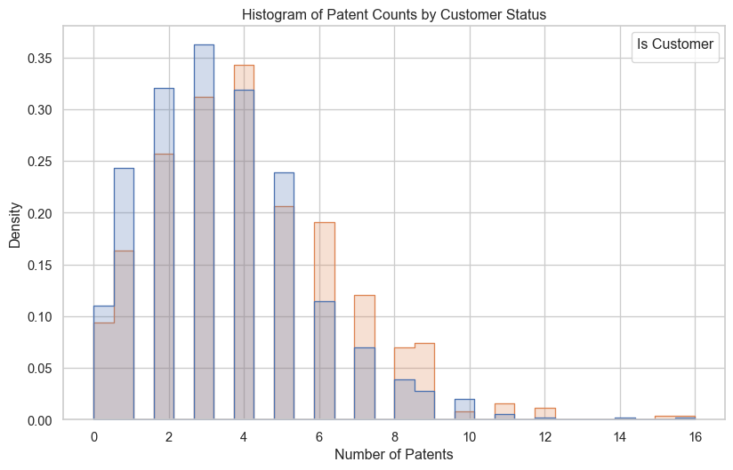
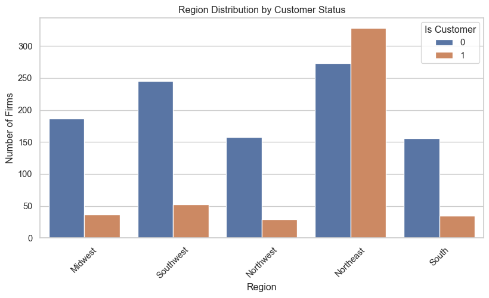
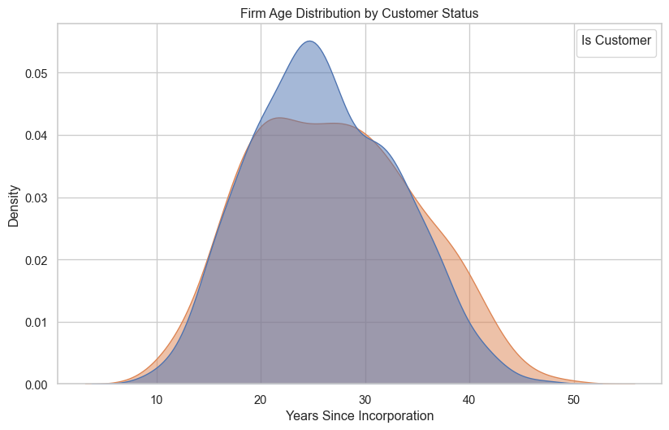
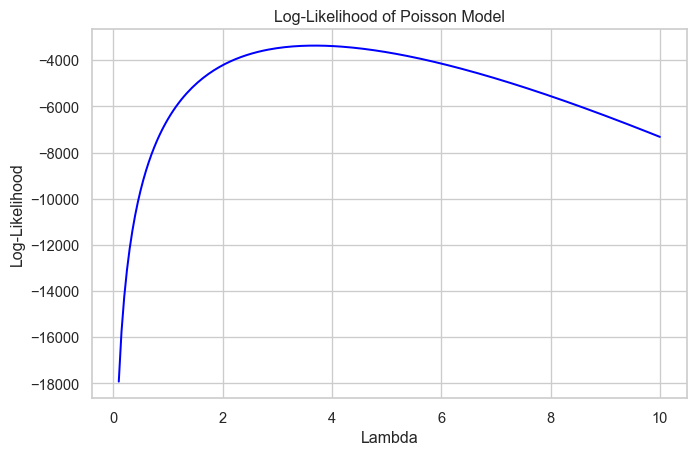
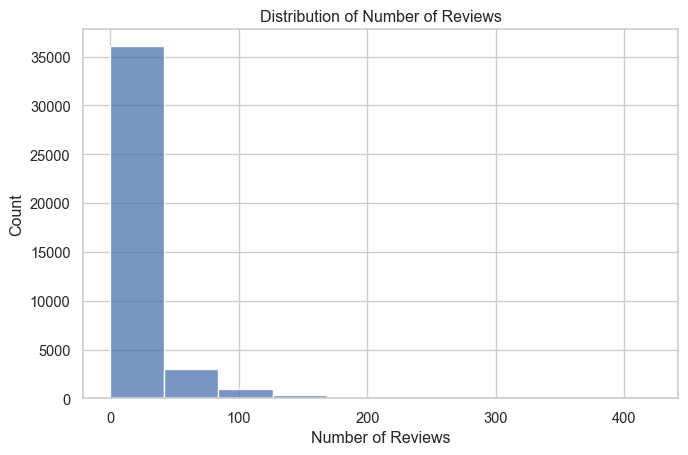
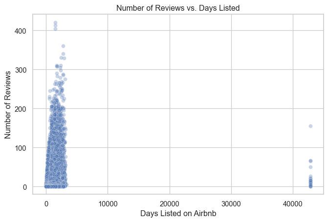
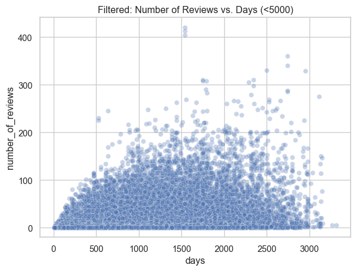

import pandas as pd
df = pd.read_csv("C:\\Users\\ASUS\\Downloads\\blueprinty.csv")
df.head()| patents | region | age | iscustomer | |
|---|---|---|---|---|
| 0 | 0 | Midwest | 32.5 | 0 |
| 1 | 3 | Southwest | 37.5 | 0 |
| 2 | 4 | Northwest | 27.0 | 1 |
| 3 | 3 | Northeast | 24.5 | 0 |
| 4 | 3 | Southwest | 37.0 | 0 |
Haoxuan Li
May 7, 2025
Blueprinty is a small firm that makes software for developing blueprints specifically for submitting patent applications to the US patent office. Their marketing team would like to make the claim that patent applicants using Blueprinty’s software are more successful in getting their patent applications approved. Ideal data to study such an effect might include the success rate of patent applications before using Blueprinty’s software and after using it. Unfortunately, such data is not available.
However, Blueprinty has collected data on 1,500 mature (non-startup) engineering firms. The data include each firm’s number of patents awarded over the last 5 years, regional location, age since incorporation, and whether or not the firm uses Blueprinty’s software. The marketing team would like to use this data to make the claim that firms using Blueprinty’s software are more successful in getting their patent applications approved.
| patents | region | age | iscustomer | |
|---|---|---|---|---|
| 0 | 0 | Midwest | 32.5 | 0 |
| 1 | 3 | Southwest | 37.5 | 0 |
| 2 | 4 | Northwest | 27.0 | 1 |
| 3 | 3 | Northeast | 24.5 | 0 |
| 4 | 3 | Southwest | 37.0 | 0 |
import matplotlib.pyplot as plt
import seaborn as sns
sns.set(style="whitegrid")
import matplotlib.pyplot as plt
# Histogram of patent counts by customer status
plt.figure(figsize=(10, 6))
sns.histplot(data=df, x="patents", hue="iscustomer", kde=False, bins=30, element="step", stat="density", common_norm=False)
plt.title("Histogram of Patent Counts by Customer Status")
plt.xlabel("Number of Patents")
plt.ylabel("Density")
plt.legend(title="Is Customer")
plt.show()C:\Users\ASUS\AppData\Local\Temp\ipykernel_73420\598583040.py:11: UserWarning: No artists with labels found to put in legend. Note that artists whose label start with an underscore are ignored when legend() is called with no argument.
plt.legend(title="Is Customer")
# Summary statistics: mean, std, count
df.groupby("iscustomer")["patents"].agg(["mean", "std", "count"])| mean | std | count | |
|---|---|---|---|
| iscustomer | |||
| 0 | 3.473013 | 2.225060 | 1019 |
| 1 | 4.133056 | 2.546846 | 481 |
Blueprinty customers are not selected at random. It may be important to account for systematic differences in the age and regional location of customers vs non-customers.
We begin by exploring the distribution of patent counts by customer status. As shown in the histogram above, firms that use Blueprinty’s software tend to have a slightly higher number of patents.
This pattern becomes more apparent when visualized.
The summary statistics support this: the average patent count for non-customers is 3.47, while it is 4.13 for customers. Although the distributions overlap substantially, Blueprinty customers appear to have heavier tails and slightly greater variance in patent production.
This preliminary evidence is consistent with the marketing team’s hypothesis that customers using Blueprinty software may be more productive in securing patents. However, other confounding factors (e.g., firm age and region) may also be driving these differences. We next examine those factors.
import matplotlib.pyplot as plt
import seaborn as sns
# Region distribution by customer status
plt.figure(figsize=(10, 5))
sns.countplot(data=df, x="region", hue="iscustomer")
plt.title("Region Distribution by Customer Status")
plt.xlabel("Region")
plt.ylabel("Number of Firms")
plt.legend(title="Is Customer")
plt.xticks(rotation=45)
plt.show()
# Age distribution by customer status (KDE)
plt.figure(figsize=(10, 6))
sns.kdeplot(data=df, x="age", hue="iscustomer", fill=True, common_norm=False, alpha=0.5)
plt.title("Firm Age Distribution by Customer Status")
plt.xlabel("Years Since Incorporation")
plt.ylabel("Density")
plt.legend(title="Is Customer")
plt.show()C:\Users\ASUS\AppData\Local\Temp\ipykernel_73420\1229093569.py:7: UserWarning: No artists with labels found to put in legend. Note that artists whose label start with an underscore are ignored when legend() is called with no argument.
plt.legend(title="Is Customer")
We next examine whether Blueprinty customers differ from non-customers in their regional and age profiles.
The bar chart above shows noticeable variation in region distribution by customer status. For example, the Northeast region contains a disproportionately large number of Blueprinty customers, whereas Southwest and Midwest regions have relatively fewer. This suggests that firms in some regions may be more likely to adopt Blueprinty software, possibly due to regional innovation ecosystems, network effects, or marketing exposure.
The density plot of firm age also shows modest differences. While the two groups are broadly similar, Blueprinty customers appear to be slightly older on average, with a heavier tail toward longer-established firms. This could imply that mature firms are more inclined to use such specialized software tools.
Together, these findings underscore the importance of controlling for region and firm age in any causal analysis of software use and patent output. We now turn to Poisson regression to formally assess this relationship.
Since our outcome variable of interest can only be small integer values per a set unit of time, we can use a Poisson density to model the number of patents awarded to each engineering firm over the last 5 years. We start by estimating a simple Poisson model via Maximum Likelihood.
Let ( Y_1, Y_2, , Y_n () ), with probability mass function:
[ f(Y_i ) = ]
Assuming the observations are independent, the likelihood function is:
[ L() = _{i=1}^{n} ]
Taking the logarithm gives the log-likelihood function:
[ L() = _{i=1}^{n} ]
This log-likelihood will be maximized to find the MLE of ().
todo: Code the likelihood (or log-likelihood) function for the Poisson model. This is a function of lambda and Y. For example:
poisson_loglikelihood <- function(lambda, Y){
...
}import matplotlib.pyplot as plt
# Use all patent counts as data
y_vals = df["patents"].values
# Try lambda values from 0.1 to 10
lambda_vals = np.linspace(0.1, 10, 200)
log_liks = [poisson_log_likelihood(lmbda, y_vals) for lmbda in lambda_vals]
# Plot
plt.figure(figsize=(8, 5))
plt.plot(lambda_vals, log_liks, color='blue')
plt.title("Log-Likelihood of Poisson Model")
plt.xlabel("Lambda")
plt.ylabel("Log-Likelihood")
plt.grid(True)
plt.show()
To confirm the intuition behind MLE for a Poisson model, we can take the derivative of the log-likelihood with respect to ():
[ L() = {i=1}^{n} ( - 1 ) = {i=1}^{n} Y_i - n ]
Setting this equal to 0 and solving:
[ Y_i = n = Y_i = {Y} ]
This confirms that the MLE for () in a Poisson distribution is simply the sample mean.
todo: Find the MLE by optimizing your likelihood function with optim() in R or sp.optimize() in Python.
from scipy.optimize import minimize
# Convert log-likelihood to a negative form for minimization
neg_log_likelihood = lambda lmbda: -poisson_log_likelihood(lmbda[0], df["patents"].values)
# Run the optimizer
result = minimize(neg_log_likelihood, x0=[2.0], bounds=[(1e-5, None)])
# Get the estimated lambda (MLE)
lambda_mle = result.x[0]
lambda_mlenp.float64(3.6846666035175017)We used scipy.optimize.minimize() to find the value of () that maximizes the Poisson log-likelihood function. The optimizer returned:
[ = 3.68 ]
This result matches the sample average of the patent counts in our dataset, which is also approximately 3.68. This confirms the theoretical result that the MLE for () in a Poisson model is simply the mean of the observed values.
Next, we extend our simple Poisson model to a Poisson Regression Model such that \(Y_i = \text{Poisson}(\lambda_i)\) where \(\lambda_i = \exp(X_i'\beta)\). The interpretation is that the success rate of patent awards is not constant across all firms (\(\lambda\)) but rather is a function of firm characteristics \(X_i\). Specifically, we will use the covariates age, age squared, region, and whether the firm is a customer of Blueprinty.
import statsmodels.api as sm
import pandas as pd
df["age2"] = df["age"] ** 2
region_dummies = pd.get_dummies(df["region"], prefix="region", drop_first=True)
X = pd.concat([
df[["iscustomer", "age", "age2"]],
region_dummies
], axis=1)
X = sm.add_constant(X)
X = X.astype(float)
y = df["patents"]
poisson_model = sm.GLM(y, X, family=sm.families.Poisson()).fit()
print(poisson_model.summary()) Generalized Linear Model Regression Results
==============================================================================
Dep. Variable: patents No. Observations: 1500
Model: GLM Df Residuals: 1492
Model Family: Poisson Df Model: 7
Link Function: Log Scale: 1.0000
Method: IRLS Log-Likelihood: -3258.1
Date: Wed, 07 May 2025 Deviance: 2143.3
Time: 23:35:19 Pearson chi2: 2.07e+03
No. Iterations: 5 Pseudo R-squ. (CS): 0.1360
Covariance Type: nonrobust
====================================================================================
coef std err z P>|z| [0.025 0.975]
------------------------------------------------------------------------------------
const -0.5089 0.183 -2.778 0.005 -0.868 -0.150
iscustomer 0.2076 0.031 6.719 0.000 0.147 0.268
age 0.1486 0.014 10.716 0.000 0.121 0.176
age2 -0.0030 0.000 -11.513 0.000 -0.003 -0.002
region_Northeast 0.0292 0.044 0.669 0.504 -0.056 0.115
region_Northwest -0.0176 0.054 -0.327 0.744 -0.123 0.088
region_South 0.0566 0.053 1.074 0.283 -0.047 0.160
region_Southwest 0.0506 0.047 1.072 0.284 -0.042 0.143
====================================================================================coefs = poisson_model.params
ses = poisson_model.bse
pvals = poisson_model.pvalues
irr = np.exp(coefs)
def significance_stars(p):
if p < 0.001:
return "***"
elif p < 0.01:
return "**"
elif p < 0.05:
return "*"
elif p < 0.1:
return "."
else:
return ""
stars = pvals.apply(significance_stars)
summary_table = pd.DataFrame({
"Variable": coefs.index,
"Coef.": coefs.round(4),
"Std.Err": ses.round(4),
"p-value": pvals.round(4),
"IRR": irr.round(4),
"Signif": stars
})
summary_table| Variable | Coef. | Std.Err | p-value | IRR | Signif | |
|---|---|---|---|---|---|---|
| const | const | -0.5089 | 0.1832 | 0.0055 | 0.6011 | ** |
| iscustomer | iscustomer | 0.2076 | 0.0309 | 0.0000 | 1.2307 | *** |
| age | age | 0.1486 | 0.0139 | 0.0000 | 1.1602 | *** |
| age2 | age2 | -0.0030 | 0.0003 | 0.0000 | 0.9970 | *** |
| region_Northeast | region_Northeast | 0.0292 | 0.0436 | 0.5037 | 1.0296 | |
| region_Northwest | region_Northwest | -0.0176 | 0.0538 | 0.7438 | 0.9826 | |
| region_South | region_South | 0.0566 | 0.0527 | 0.2828 | 1.0582 | |
| region_Southwest | region_Southwest | 0.0506 | 0.0472 | 0.2839 | 1.0519 |
We estimated a Poisson regression model to examine whether firms that use Blueprinty software are more successful in obtaining patents. The model includes firm characteristics such as age, age squared, and region, along with a binary indicator for whether the firm is a Blueprinty customer. The coefficient on iscustomer is positive and highly statistically significant (p < 0.001), with an incident rate ratio (IRR) of 1.23. This suggests that, holding other variables constant, The effect of age is also strong and positive, but the negative coefficient on age² suggests diminishing returns: as firms grow older, their patent output increases, but at a decreasing rate. Regional differences appear not to be statistically significant after accounting for age and customer status, as none of the region dummy variables show significant effects.
We estimated the Poisson regression model using Python’s statsmodels.GLM() function with a log link and Poisson family, as suggested. This is equivalent to R’s glm(..., family = poisson) and provides consistent MLE estimates, standard errors, and significance tests.
X0 = X.copy()
X1 = X.copy()
X0["iscustomer"] = 0
X1["iscustomer"] = 1
y_pred_0 = poisson_model.predict(X0)
y_pred_1 = poisson_model.predict(X1)
diff = y_pred_1 - y_pred_0
ate = diff.mean()
print(f"Average predicted effect of Blueprinty = {ate:.3f} additional patents per firm.")Average predicted effect of Blueprinty = 0.793 additional patents per firm.To more concretely interpret the effect of Blueprinty’s software on patent outcomes, we conducted a counterfactual simulation.
Using our fitted Poisson regression model, we predicted the expected number of patents for each firm under two scenarios:
iscustomer = 0)iscustomer = 1)We then computed the difference in predicted patent counts for each firm and took the average across all firms.
The result suggests that, on average, a firm would be expected to receive 0.793 more patents over a 5-year period if it were a Blueprinty customer, holding other variables constant.
This provides a clear, interpretable estimate of Blueprinty’s impact and supports the marketing team’s claim with a data-driven justification.
AirBnB is a popular platform for booking short-term rentals. In March 2017, students Annika Awad, Evan Lebo, and Anna Linden scraped of 40,000 Airbnb listings from New York City. The data include the following variables:
- `id` = unique ID number for each unit
- `last_scraped` = date when information scraped
- `host_since` = date when host first listed the unit on Airbnb
- `days` = `last_scraped` - `host_since` = number of days the unit has been listed
- `room_type` = Entire home/apt., Private room, or Shared room
- `bathrooms` = number of bathrooms
- `bedrooms` = number of bedrooms
- `price` = price per night (dollars)
- `number_of_reviews` = number of reviews for the unit on Airbnb
- `review_scores_cleanliness` = a cleanliness score from reviews (1-10)
- `review_scores_location` = a "quality of location" score from reviews (1-10)
- `review_scores_value` = a "quality of value" score from reviews (1-10)
- `instant_bookable` = "t" if instantly bookable, "f" if notimport pandas as pd
airbnb = pd.read_csv("C:\\Users\\ASUS\\Downloads\\airbnb.csv")
airbnb.info()
airbnb.head()<class 'pandas.core.frame.DataFrame'>
RangeIndex: 40628 entries, 0 to 40627
Data columns (total 14 columns):
# Column Non-Null Count Dtype
--- ------ -------------- -----
0 Unnamed: 0 40628 non-null int64
1 id 40628 non-null int64
2 days 40628 non-null int64
3 last_scraped 40628 non-null object
4 host_since 40593 non-null object
5 room_type 40628 non-null object
6 bathrooms 40468 non-null float64
7 bedrooms 40552 non-null float64
8 price 40628 non-null int64
9 number_of_reviews 40628 non-null int64
10 review_scores_cleanliness 30433 non-null float64
11 review_scores_location 30374 non-null float64
12 review_scores_value 30372 non-null float64
13 instant_bookable 40628 non-null object
dtypes: float64(5), int64(5), object(4)
memory usage: 4.3+ MB| Unnamed: 0 | id | days | last_scraped | host_since | room_type | bathrooms | bedrooms | price | number_of_reviews | review_scores_cleanliness | review_scores_location | review_scores_value | instant_bookable | |
|---|---|---|---|---|---|---|---|---|---|---|---|---|---|---|
| 0 | 1 | 2515 | 3130 | 4/2/2017 | 9/6/2008 | Private room | 1.0 | 1.0 | 59 | 150 | 9.0 | 9.0 | 9.0 | f |
| 1 | 2 | 2595 | 3127 | 4/2/2017 | 9/9/2008 | Entire home/apt | 1.0 | 0.0 | 230 | 20 | 9.0 | 10.0 | 9.0 | f |
| 2 | 3 | 3647 | 3050 | 4/2/2017 | 11/25/2008 | Private room | 1.0 | 1.0 | 150 | 0 | NaN | NaN | NaN | f |
| 3 | 4 | 3831 | 3038 | 4/2/2017 | 12/7/2008 | Entire home/apt | 1.0 | 1.0 | 89 | 116 | 9.0 | 9.0 | 9.0 | f |
| 4 | 5 | 4611 | 3012 | 4/2/2017 | 1/2/2009 | Private room | NaN | 1.0 | 39 | 93 | 9.0 | 8.0 | 9.0 | t |
import matplotlib.pyplot as plt
import seaborn as sns
plt.figure(figsize=(8, 5))
sns.histplot(airbnb["number_of_reviews"], bins=10, kde=False)
plt.title("Distribution of Number of Reviews")
plt.xlabel("Number of Reviews")
plt.ylabel("Count")
plt.show()
vars_for_model = [
"number_of_reviews", "days", "room_type", "price",
"review_scores_cleanliness", "review_scores_location",
"review_scores_value", "instant_bookable"
]
airbnb_clean = airbnb[vars_for_model].dropna()
airbnb_clean["instant_bookable"] = airbnb_clean["instant_bookable"].map({"t": 1, "f": 0})
room_dummies = pd.get_dummies(airbnb_clean["room_type"], prefix="room", drop_first=True)
X_df = pd.concat([airbnb_clean.drop(columns=["room_type"]), room_dummies], axis=1)
X_df.head()| number_of_reviews | days | price | review_scores_cleanliness | review_scores_location | review_scores_value | instant_bookable | room_Private room | room_Shared room | |
|---|---|---|---|---|---|---|---|---|---|
| 0 | 150 | 3130 | 59 | 9.0 | 9.0 | 9.0 | 0 | True | False |
| 1 | 20 | 3127 | 230 | 9.0 | 10.0 | 9.0 | 0 | False | False |
| 3 | 116 | 3038 | 89 | 9.0 | 9.0 | 9.0 | 0 | False | False |
| 4 | 93 | 3012 | 39 | 9.0 | 8.0 | 9.0 | 1 | True | False |
| 5 | 60 | 2981 | 212 | 9.0 | 9.0 | 9.0 | 0 | False | False |
import matplotlib.pyplot as plt
import seaborn as sns
plt.figure(figsize=(8, 5))
sns.scatterplot(data=X_df, x="days", y="number_of_reviews", alpha=0.3)
plt.title("Number of Reviews vs. Days Listed")
plt.xlabel("Days Listed on Airbnb")
plt.ylabel("Number of Reviews")
plt.show()
We begin by examining the relationship between the number of reviews and the number of days a listing has been active on Airbnb.
A scatter plot of number_of_reviews against days (the time since the listing was first posted) shows a clear positive relationship: listings that have been on the platform longer tend to have more reviews. This is intuitive, as older listings have had more time to accumulate customer feedback.
However, we also observe some extreme outliers, with days values exceeding 30,000 (i.e., over 80 years). These are likely data errors or artifacts from date calculations and should be removed before modeling. We propose restricting the dataset to listings with fewer than 5,000 days active (approximately 13 years) to ensure data quality.
This initial visualization confirms that days is a key variable in predicting the number of reviews and motivates its inclusion in the Poisson regression model.
X_df_filtered = X_df[X_df["days"] < 5000]
sns.scatterplot(data=X_df_filtered, x="days", y="number_of_reviews", alpha=0.3)
plt.title("Filtered: Number of Reviews vs. Days (<5000)")
plt.show()
import statsmodels.api as sm
y = X_df_filtered["number_of_reviews"]
X = sm.add_constant(X_df_filtered["days"])
poisson_model = sm.GLM(y, X, family=sm.families.Poisson()).fit()
coefs = poisson_model.params
ses = poisson_model.bse
pvals = poisson_model.pvalues
irr = np.exp(coefs)
summary_table = pd.DataFrame({
"Variable": coefs.index,
"Coefficient": coefs.values,
"Std. Error": ses.values,
"p-value": pvals.values,
"IRR": irr.values
})
summary_table.round(4)| Variable | Coefficient | Std. Error | p-value | IRR | |
|---|---|---|---|---|---|
| 0 | const | 2.4616 | 0.0028 | 0.0 | 11.7237 |
| 1 | days | 0.0005 | 0.0000 | 0.0 | 1.0005 |
To examine the relationship between listing age and review volume, we modeled the number of reviews a listing received using a Poisson regression, with days (the number of days since the listing went live) as the sole predictor.
The table below summarizes the regression results:
Variable Coefficient Std. Error p-value IRR Intercept 2.4616 0.0028 <0.001 11.7237 Days 0.0005 0.0000 <0.001 1.0005
The coefficient on days is positive and highly statistically significant. Interpreted as an incident rate ratio (IRR), each additional day a listing is online is associated with a 0.05% increase in the expected number of reviews. This suggests that listing duration is an important driver of review accumulation, as older listings naturally have more time to attract guests and feedback.
This simple model confirms the usefulness of days as a predictor and motivates its inclusion in more comprehensive models that incorporate additional listing characteristics.
import statsmodels.api as sm
y = X_df_filtered["number_of_reviews"]
X_multi = X_df_filtered.drop(columns=["number_of_reviews"])
X_multi = sm.add_constant(X_multi)
X_multi = X_multi.astype(float)
poisson_full_model = sm.GLM(y, X_multi, family=sm.families.Poisson()).fit()
print(poisson_full_model.summary()) Generalized Linear Model Regression Results
==============================================================================
Dep. Variable: number_of_reviews No. Observations: 30325
Model: GLM Df Residuals: 30316
Model Family: Poisson Df Model: 8
Link Function: Log Scale: 1.0000
Method: IRLS Log-Likelihood: -4.9535e+05
Date: Wed, 07 May 2025 Deviance: 8.6847e+05
Time: 23:35:19 Pearson chi2: 1.19e+06
No. Iterations: 6 Pseudo R-squ. (CS): 0.9655
Covariance Type: nonrobust
=============================================================================================
coef std err z P>|z| [0.025 0.975]
---------------------------------------------------------------------------------------------
const 2.9260 0.016 183.233 0.000 2.895 2.957
days 0.0005 1.84e-06 284.613 0.000 0.001 0.001
price -3.144e-05 7.5e-06 -4.191 0.000 -4.61e-05 -1.67e-05
review_scores_cleanliness 0.1109 0.002 73.536 0.000 0.108 0.114
review_scores_location -0.0859 0.002 -53.815 0.000 -0.089 -0.083
review_scores_value -0.0889 0.002 -48.336 0.000 -0.092 -0.085
instant_bookable 0.4598 0.003 158.119 0.000 0.454 0.465
room_Private room 0.0079 0.003 2.933 0.003 0.003 0.013
room_Shared room -0.1243 0.009 -14.466 0.000 -0.141 -0.107
=============================================================================================import numpy as np
import pandas as pd
coefs = poisson_full_model.params
ses = poisson_full_model.bse
pvals = poisson_full_model.pvalues
irr = np.exp(coefs)
summary_full = pd.DataFrame({
"Variable": coefs.index,
"Coefficient": coefs.values,
"Std. Error": ses.values,
"p-value": pvals.values,
"IRR": irr.values
}).round(4)
summary_full| Variable | Coefficient | Std. Error | p-value | IRR | |
|---|---|---|---|---|---|
| 0 | const | 2.9260 | 0.0160 | 0.0000 | 18.6536 |
| 1 | days | 0.0005 | 0.0000 | 0.0000 | 1.0005 |
| 2 | price | -0.0000 | 0.0000 | 0.0000 | 1.0000 |
| 3 | review_scores_cleanliness | 0.1109 | 0.0015 | 0.0000 | 1.1173 |
| 4 | review_scores_location | -0.0859 | 0.0016 | 0.0000 | 0.9177 |
| 5 | review_scores_value | -0.0889 | 0.0018 | 0.0000 | 0.9150 |
| 6 | instant_bookable | 0.4598 | 0.0029 | 0.0000 | 1.5838 |
| 7 | room_Private room | 0.0079 | 0.0027 | 0.0034 | 1.0079 |
| 8 | room_Shared room | -0.1243 | 0.0086 | 0.0000 | 0.8831 |
We extend our Poisson regression model to include additional covariates related to listing characteristics, including price, review scores, room type, and instant bookability.
Key findings include:
days remains a highly significant and positive predictor of review count. Each extra day on the platform increases expected reviews by ~0.05% (IRR = 1.0005).price has a small but significant negative coefficient, indicating that more expensive listings tend to get fewer reviews.review_scores_cleanliness is positively associated with reviews (IRR > 1), while review_scores_location and review_scores_value are negatively associated.instant_bookable listings receive about 58% more reviews than those that are not (IRR ≈ 1.58).These results offer interpretable evidence that both listing age and features like review quality, price, and booking flexibility influence review counts.